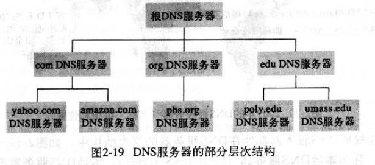
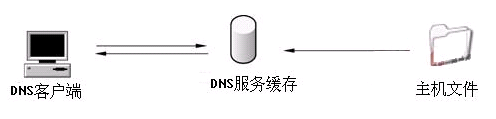
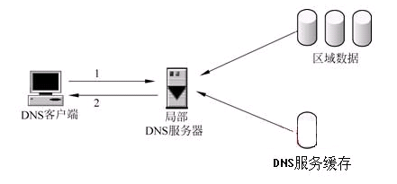
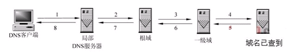
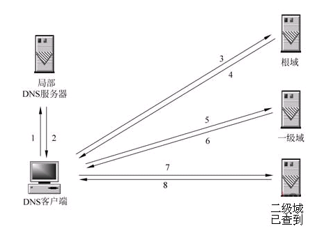

为什么需要 DNS 解析
我们一般都是在地址栏输入域名去访问站点，因为我们是无法记住超多个 IP 地址的。但是计算机在网络上进行通讯时又只能识别 IP 地址，并不能识别域名，因为网络通信大都是基于 TCP/IP 的，而 TCP/IP 是基于 IP 地址的。这个时候，就需要 DNS 服务器将我们输入的域名“翻译”成对应的 IP 地址，继续后续的工作。
什么是 DNS
Domain Name System(DNS)，它用于 TCP/IP 网络，是应用层的协议。DNS 服务器提供将主机名和域名转换为 IP 地址和将 IP 地址转换为域名的服务。
DNS 服务器类型
- 主域名服务器（master）：对解析库可以修改查询。从域管理员构造的本地磁盘文件中加载域信息
- 辅助域名服务器（slave）：对解析库不能修改，可以查询。从主服务器中复制域信息，并作为本地磁盘文件存储在辅助服务器中。
- 缓存域名服务器：将取得的域名服务器查询结果缓存，以后查询相同的信息时就用它回答
- 转发域名服务器：先从本地缓存中查询，如果找不到就转发到指定域名服务器，直到查询到结果为止，否则返回无法映射的结果
DNS 使用的协议
DNS 同时占用 UDP 和 TCP 的 53 端口，单个应用协议同时使用两种传输协议。DNS 在进行区域传输的时候使用 TCP 协议，其他时候使用 UDP 协议。
- 为什么既使用 TCP 又使用 UDP？
UDP 的最大报文长度为 512 字节，TCP 允许报文长度超过 512 字节。当 DNS 查询超过 512 字节的时候，使用 TCP 发送。
为什么区域传输的时候使用 TCP？
- 辅域名服务器会定时（一般为 3 小时）向主域名服务器进行查询以便了解数据是否发生变动。如有变动，则会执行一次区域传输，进行数据同步，而数据同步传输的数据量比一个请求和应答的数据量要多得多
- TCP 的可靠连接保证了数据的准确性
DNS 服务器的层次结构

- 根域：dns域名中使用时，规定有尾部句点(.)来指定名称位于根或更高级别的域层次结构
- 顶级域：用来指示某个国家/地区或组织使用的名称的类型名称，例如：.com 或 .cn
- 二级域： 个人或组织在Internet上使用的注册名称，例如：.edu 或 .gov
- 子域：已注册的二级域名衍生的域名，通俗的讲就是网站名，例如：www.xupt.edu
- 主机名：通常情况下，DNS域名的最左侧的标签标识网络上的特定计算机，例如：h1.www.xupt.edu
DNS 的分布式集群工作
为什么不采用单点的集中式设计方式？
假设在因特网上只使用一个 DNS 服务器，这个服务器包含所有的映射，多台客户机直接将各自的查询请求发往单一的 DNS 服务器，同时该 DNS 服务器直接对所有客户机的请求做出响应。当今的因特网拥有数量巨大并且依然在持续增长的主机，这种方式会导致通信容量巨大（客户机请求数量巨大），远距离的时间延迟（异国传送）、维护开销大（所有的主机名-IP 映射在一个服务站点作更新）以及单点故障等问题。
DNS 工作过程
当客户端要通过一个主机名称来访问网络中的一台主机时，它首先要得到这个主机名称所对应的IP地址，因为IP数据报中允许放置的是目地主机的IP地址，而不是主机名称。操作系统会从本机的hosts文件中得到主机名称所对应的IP地址，但如果hosts文件不能解析该主机名称时，只能通过向客户机所设定DNS服务器进行查询了。
1. 本地解析
客户机平时得到的DNS查询记录都保留在DNS缓存中，客户机操作系统上都运行着一个DNS客户端程序。当其他程序提出DNS查询请求时，这个查询请求要传送至DNS客户端程序。DNS客户端程序首先使用本地缓存信息进行解析，如果可以解析所要查询的名称，则DNS客户端程序就直接应答该查询，而不需要向DNS服务器查询，该DNS查询处理过程也就结束了。

2. 直接解析：
如果DNS客户端程序不能从本地DNS缓存回答客户机的DNS查询，它就向客户机所设定的局部DNS服务器发一个查询请求，要求局部DNS服务器进行解析。如下图所示，局部DNS服务器得到这个查询请求，首先查看一下所要求查询的域名是不是自己能回答的，如果能回答，则直接给予回答，如是不能回答，再查看自己的DNS缓存，如果可以从缓存中解析，则也是直接给予回应。

3. 递归解析:
当局部DNS服务器自己不能回答客户机的DNS查询时，它就需要向其他DNS服务器进行查询。此时有两种方式，如下图所示的是递归方式。局部DNS服务器自己负责向其他DNS服务器进行查询，一般是先向该域名的根域服务器查询，再由根域名服务器一级级向下查询。最后得到的查询结果返回给局部DNS服务器，再由局部DNS服务器返回给客户端。

4. 迭代解析:
当局部DNS服务器自己不能回答客户机的DNS查询时，也可以通过迭代查询的方式进行解析，如下图所示。局部DNS服务器不是自己向其他DNS服务器进行查询，而是把能解析该域名的其他DNS服务器的IP地址返回给客户端DNS程序，客户端DNS程序再继续向这些DNS服务器进行查询，直到得到查询结果为止。
